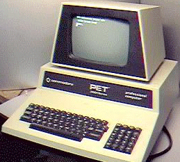
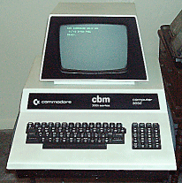
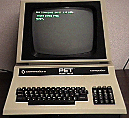
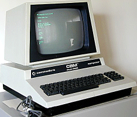
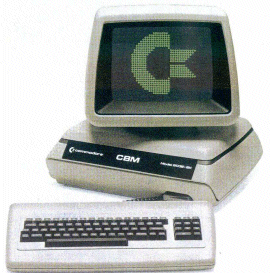
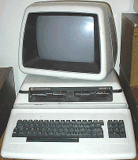
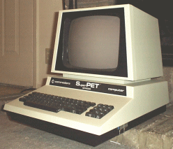
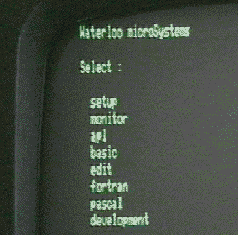

PET index - disk gallery
(Images courtesy Bo Zimmermann, from his CBM gallery.)
 | The original 2001 PET |
| Later they got up to 32k RAM and better keyboards... |  |
|  | ...and were sold as CBM3032 in Germany |
| With BASIC4 they were rebranded as 40xx, here with a 12" screen,... |  |
|  | ...and with 80 columns became the 8032 |
| The new case looks great! |  |
|  | The final incarnation was the 8296 with builtin 8250 drive |
| A special machine is the SuperPET! |  |
|  | This shows the SuperPET's startup menu in 6809 mode |
PET index V1.0 (c) 1998-2005 A. Fachat